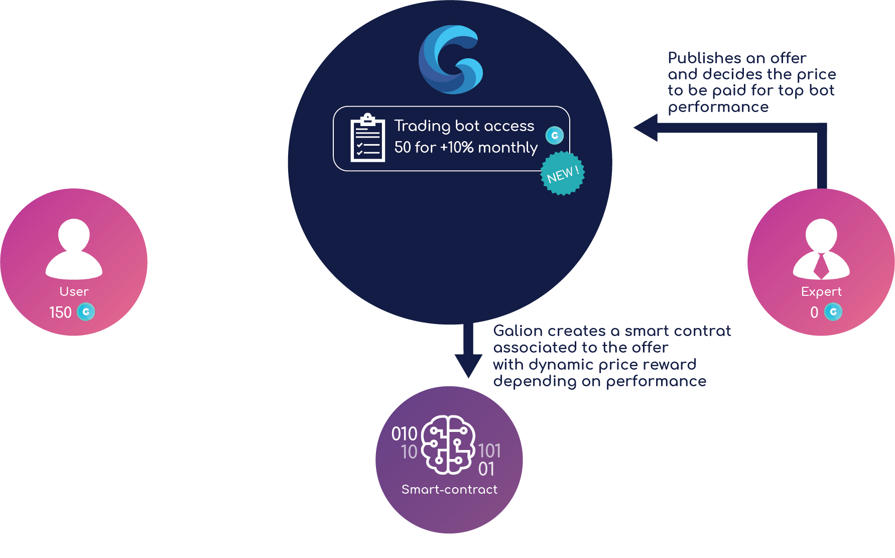

Наше видение
Планы проекта Galion не поддаются никакому сравнению.
Мы хотим помочь всем и каждому разобраться в постоянно меняющихся условиях нашего финансового мира. Все изменилось после создания блокчейна, который позволяет управлять вашими активами, используя нашу уникальную платформу, а также многолетний опыт и бесценные знания.

Единый интерфейс для управления всеми финансовыми вопросами
Проект Galion позволяет быстро управлять как традиционными, так и криптовалютными активами, включая банковские счета, торговые криптовалютные и фиатные счета, банковские карты и другие инструменты. Попрощайтесь с сотней громоздких приложений, и научитесь использовать свое время максимально эффективно.

Доступ к финансовым знаниям международного уровня
Проект Galion включает в себя революционную платформу для управления финансовыми активами, которая работает на основе токена Galion, и позволяет получить доступ к самой актуальной информации в мире экономики и финансов. Платформа предлагает удобную новостную ленту, аналитические инструменты и такие уникальные услуги, как финансовый аудит и налоговые консультации. Перейдите на качественно новый уровень вашей финансовой жизни.

Получите возможность принимать правильные решения, позволяющие раскрыть весь потенциал ваших денежных средств.
Проект Galion позволяет принимать взвешенные и правильные решения, используя глубинный анализ эффективности работы вашего финансового портфеля, а также информацию о прибыли и убытках в рамках единого интерфейса, который позволяет выбрать наиболее правильное решение в каждой конкретной ситуации.
Торговая площадка Galion
Торговая площадка Galion открывает доступ к услугам профессиональных экспертов в мире финансов.
Умный контракт создается в сети Ethereum, и используется в качестве независимого центра, не требующего доверия, работающего между пользователем и торговой площадкой. Система Galion Oracle, являющаяся неотъемлемой частью Galion, используется в качестве арбитра, регулирующего взаимоотношения между сторонами, который гарантирует поступление средств продавцу, или возврат средств покупателю при наличии соответствующих условий.



Наш MVP
Наш проект появился в тот момент, когда мы осознали, что в мире отсутствует надежное решение для управления финансовыми активами, необходимость в котором появилась в результате молниеносного развития блокчейна и появления различных токенов. Для решения данной проблемы был создан MVP (продукт с минимальным функционалом), который уже получил звание лучшего решения для управления активами на рынке, и в самое ближайшее время сможет быстро занять другие отрасли при развитии в соответствии с нашим планом.
Четкая финансовая картинка
Получите возможность отслеживание изменений вашего портфеля в режиме реального времени, при этом, вам не придется вводить информацию о каждой транзакции в ручном режиме.
Используйте уникальный модульных подход, реализованный в нашей системе, которая позволяет работать со счетами и портфелями, обеспечивая максимальную гибкость отслеживания всех необходимых параметров и индикаторов.
Оставайтесь в тренде, используя визуальное представление 100 лучших активов в системе Coinmarketcap.
MVP-решение от Galion имеет дружелюбный интерфейс, и вы можете свободно использовать его как на телефоне, так и на планшете. Будьте в курсе последних событий, ведь именно создание мобильного приложения является первым и одним из самых главных этапов развития нашего проекта.
Automated tracking
Проект Galion использует API-интерфейсы для работы с многочисленными биржами и блокчейнами. Преимущество заключается в том, что вы получаете возможность автоматической синхронизации с Galion. В настоящее время система поддерживает: Bitcoin, Ethereum, Bitcoin Cash, Binance, Kraken и Bittrex. В ближайшее время будут добавлены новые проекты и системы!
Кроме того, вы всегда сможете использовать ручной режим, чтобы добавить информацию из учетных записей, не поддерживаемых системой.
Ledger Integration
Используйте Galion для создания и сохранения Ethereum-транзакций с помощью Ledger Nano S.
Учитывая то, что наш проект создан не только для того, чтобы отслеживать текущее состояние ваших активов, мы хотим показать нашим пользователям, что уже приступили к реализации первых шагов, которые содержатся в плане нашего развития. Мы решили обеспечить интеграцию с распределенным журналом, чтобы подчеркнуть высокую безопасность и удобство отслеживания информации.
Команда проекта Galion
В команде проекта Galion работают талантливые профессионалы своего дела, имеющие богатый опыт работы и бесценные знания в сфере блокчейна, кибербезопасности, разработки программного обеспечения, консалтинга и создания стартапов. Каждый из них закончил одно из престижных учебных заведений во Франции, получив степень в области разработки ПО, управления бизнесом или юриспруденции.
Edouard Viguier
CEO
Эдуард работает в сфере блокчейна на протяжении 3 лет, занимая руководящие посты в крупных проектах, связанных с блокчейном и кибербезопасностью, реализуемых банковскими и промышленными организациями. Кроме того, он занимает пост заместителя директора Комитета по внутренней безопасности в одной из ведущих молодежных организаций на территории Франции, и отвечая за вопросы обеспечения безопасности. Он закончил одно из самых престижных учебных заведений во Франции, и специализируется на работе в сфере блокчейна, кибербезопасности и защиты. Именно он стал автором идеи и вдохновителем проекта Galion.
Romain Bury
CFO
На протяжении более 4 лет Ромен работает консультантом в сфере создания цифровых стратегий, консультируя инвестиционные фонды, а также ряд крупных компаний на территории Франции, помогая принимать стратегические решения. Он закончил одно из самых престижных технических учебных заведений во Франции, и получил два высших образования в сфере экономики, финансов и инноваций.
Charles Riche
COO
В течение четырех лет Чарльз занимал пост руководителя и управляющего директора одного из самых известных французских стартапов, компании Devialet. Он отвечал за решение финансовых вопросов, и смог привлечь более 100 миллионов евро в ходе кампании по сбору средств. Он закончил один из самых престижных университетов Франции, и получил степень в сфере менеджмента, стратегического планирования и маркетинга.
Emilien André
CTO
На протяжении четырех лет Эмильен работал разработчиком программного обеспечения в TF1, Lagardère и Canal+. Основной сферой его деятельности является разработка программных решений, требующих высокой степени защиты и быстрой скорости обработки данных для обеспечения потребностей крупнейших представителей СМИ. Он действительно увлечен своей работой, и готов сделать все, чтобы оптимизировать имеющиеся системы, гарантируя максимальную скорость работы. Именно он отвечает за работу центральной системы проекта Galion. Кроме того, он имеет степень магистра в сфере теории вычислительных машин.
Erwan Beauvois
VP Engineering
В течение трех лет Эрван работал в проекте Intent Technologies, где занимался разработкой серверных решений и пользовательских приложений, а также выполнял анализ и обработку данных. Он имеет бесценные знания в области создания веб-приложений и их интеграции, что позволит создать уникальный продукт для проекта Galion. Он имеет степень магистра в сфере теории ЭВМ, и специализируется на робототехнике и искусственном интеллекте.
Théo Jégousse
Product Design
Тео уникальный дизайнер, имеющий бесценный опыт создания пользовательских интерфейсов. На протяжении последних 10 лет он работал с такими известными компаниями, как Orange, Arte, Devialet, помогая создать уникальный стиль, и обеспечивая стабильное продвижение готовых решений.
Sépinoud Ihami
DPO
Она готова бороться со всеми проблемами современного мира цифровых технология, используя свои бесценные знания, чтобы гарантировать полную безопасность и надежную защиту данных проекта Galion. Она имеет два высших образования в сфере законодательства о новых технологиях и европейского права.
Консультативный совет
Claire
Balva
CEO Blockchain Partner
Специалист в сфере блокчейна
Jacques
Pantin
Бывший вице-президент по вопросам кибербезопасности и подтверждения личности в компании Morpho
Кибербезопасность
Valérie
Chavanne
Занимала пост главного консультанта по вопросам общественной политики и сотрудничеству с Европейским агентством лекарственных средств в компании Yahoo
Юридическая поддержка по вопросам защиты личных данных
Arnaud
Grunthaler
Партнер по вопросам блокчейна, Fieldfisher
Юридическая поддержка в сфере блокчейна и криптовалют
Olivier
Legrand
Юрист по вопросам слияний и поглощений Gide Loyrette Nouel
Корпоративное и бизнес-право
Наши партнеры
Один из лидеров Франции в сфере консалтинга по вопросам блокчейна и криптовалютных технологий.
Международная юридическая компания, работающая в сфере блокчейна и криптовалютных технологий.
Всеобъемлющее решение для работы в рамках программы "знай своего клиента".
Один из лидеров Франции в сфере стартапов.
Лидирующая компания Франции в сфере привлечение клиентов и сообщества пользователей криптовалют.
Продажа токенов Galion
TДанный токен будет лежать в основе финансовой платформы Galion, позволяющей создать мощное сообщество пользователей, и обеспечить развитие MVP-решения. Для реализации данного проекта мы планируем проведение процедуры продажи токенов.
Токен Galion
Токен Galion станет "топливом" для торговой площадки Galion, позволяя пользователям получить скидку до 50% на оплату премиальных услуг платформы. Кроме того, ряд пользователей получат доступ к специальным функциям системы.
Процедура продажи токенов

60% токенов будут реализованы в рамках открытой продажи, которая включает два основных этапа - предварительный и основной.
Если вы хотите принять участие в предварительной продаже, пожалуйста, свяжитесь с нами по адресу presale@galion.io.
Гарантия спокойствия для участников процедуры - решение юридических вопросов и проблем безопасности
Юридические вопросы и проблемы, связанные с безопасностью, являются одними из главных моментов при проведении процедуры продажи токенов. Наш проект сотрудничает с Fieldfisher и LegalUp Consulting, что позволяет обеспечить полное соответствие нормам действующего законодательства, а также требованиям Европейского регламента по обработке личных данных.
Техническая документация
Скачайте нашу техническую документацию, чтобы получить полное представление о наших целях, планах развития и общем понимании текущего состояния рынка.
 !
!